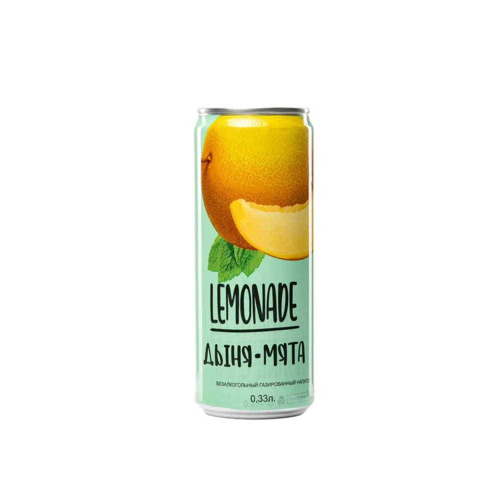
AQUALANIA-CAN-DYNYA-MYATA-330-CAN
AquAlania Дыня-Мята, 0,33 л, алюминиевая банка
Дыня-Мята
0,33 л, алюминиевая банка
https://img1.creatium.ru/disk2/f9/54/62/cdd937a14708272bb2828105ecef7e10c7/jb_dinya_myata.png
artifacts/aqualania-import/2026-08-05T13-05-07-740Z-final/processed/AQUALANIA-CAN-DYNYA-MYATA-330-CAN.webp
869×1216 image/png
review=approved
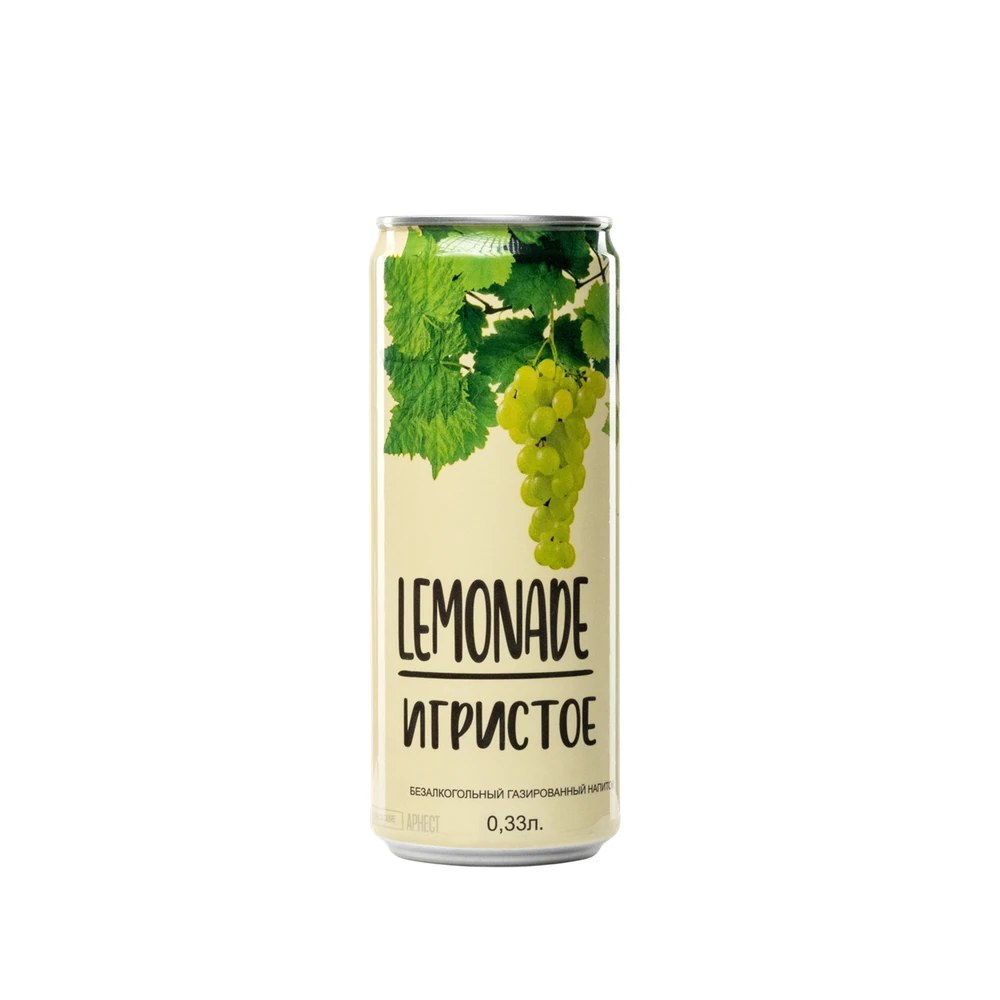
AQUALANIA-CAN-IGRISTOE-330-CAN
Напиток газированный AquAlania Игристое, 0,33 л, банка
Игристое
0,33 л, алюминиевая банка
https://img1.creatium.ru/disk2/6e/b2/5d/2f55d9d55b3693c38a4c4074c9cfd36465/jb_igristoe.png
artifacts/aqualania-import/2026-08-05T13-05-07-740Z-final/processed/AQUALANIA-CAN-IGRISTOE-330-CAN.webp
891×1160 image/png
review=approved
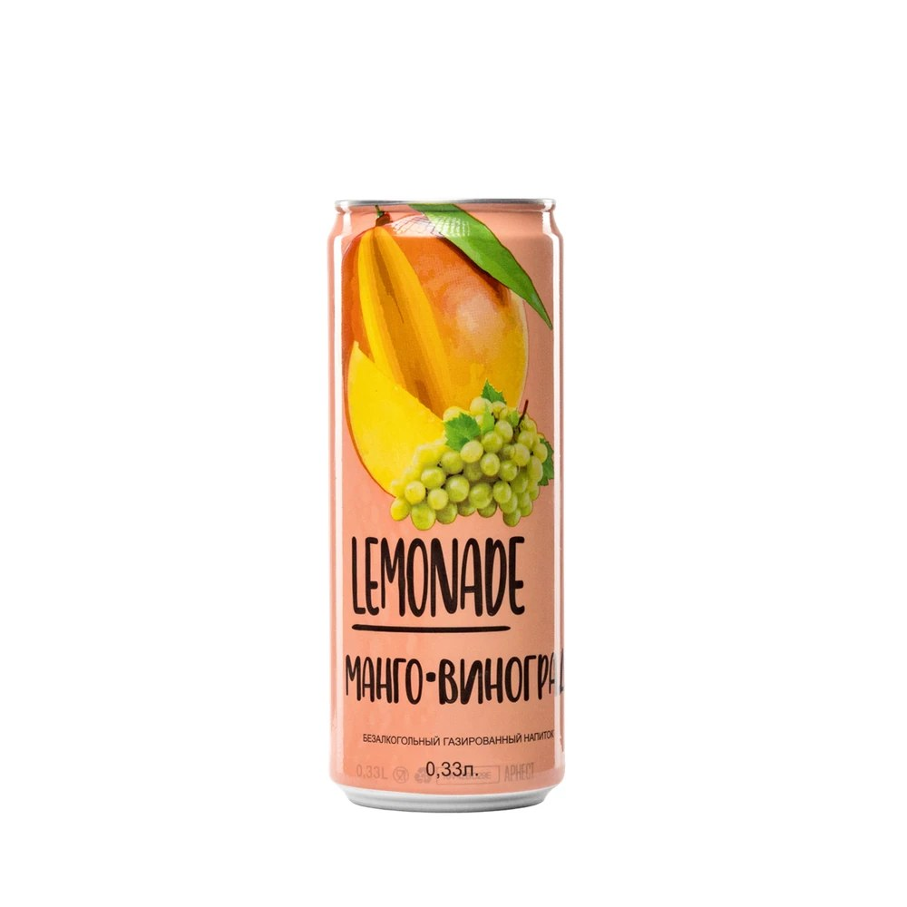
AQUALANIA-CAN-MANGO-VINOGRAD-330-CAN
AquAlania Манго-Виноград, 0,33 л, алюминиевая банка
Манго-Виноград
0,33 л, алюминиевая банка
https://img1.creatium.ru/disk2/45/dc/62/6fd3dd223b800232e677ef9fc25944e7d4/jb_mango_vinograd_2.png
artifacts/aqualania-import/2026-08-05T13-05-07-740Z-final/processed/AQUALANIA-CAN-MANGO-VINOGRAD-330-CAN.webp
882×1117 image/png
review=approved
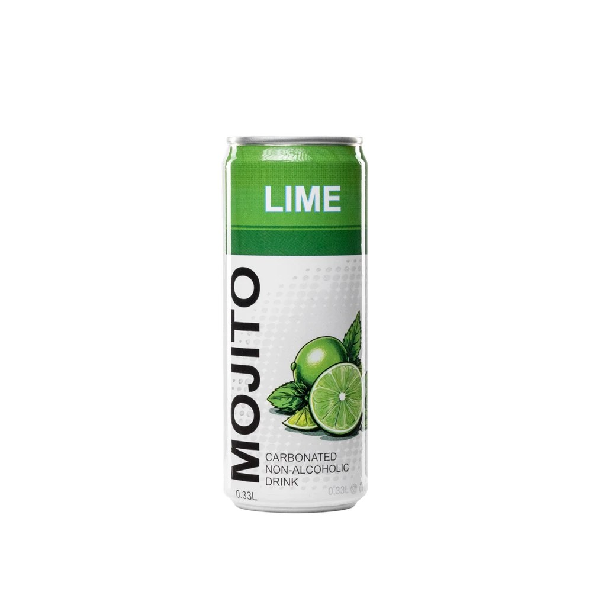
AQUALANIA-CAN-MOHITO-CLASSIC-330-CAN
AquAlania Мохито классический, 0,33 л, алюминиевая банка
Мохито классический
0,33 л, алюминиевая банка
https://img1.creatium.ru/disk2/5a/ef/46/5975fdb1b5203564567130ffb12b15491d/jb_moh_klass.png
artifacts/aqualania-import/2026-08-05T13-05-07-740Z-final/processed/AQUALANIA-CAN-MOHITO-CLASSIC-330-CAN.webp
868×1186 image/png
review=approved

AQUALANIA-CAN-MOHITO-KLUBNICHNYY-330-CAN
AquAlania Мохито клубничный, 0,33 л, алюминиевая банка
Мохито клубничный
0,33 л, алюминиевая банка
https://img1.creatium.ru/disk2/02/5c/f9/49e239712b22206bd7de6e70c37e124f13/jb_moh_klubne.png
artifacts/aqualania-import/2026-08-05T13-05-07-740Z-final/processed/AQUALANIA-CAN-MOHITO-KLUBNICHNYY-330-CAN.webp
846×1206 image/png
review=approved

AQUALANIA-LIGHT-ANANAS-330-PETCAN
AquAlania Light Ананас без сахара, 0,33 л, ПЭТ-банка с алюминиевой крышкой
Ананас
0,33 л, ПЭТ-банка с алюминиевой крышкой
https://img1.creatium.ru/c9/3e/59/33760b0eeba5d25cf2d2f5e988cdd3bcc9/ananas.jpg
artifacts/aqualania-import/2026-08-05T13-05-07-740Z-final/processed/AQUALANIA-LIGHT-ANANAS-330-PETCAN.webp
224×200 image/jpeg
review=approved
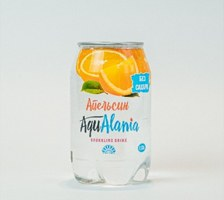
AQUALANIA-LIGHT-APELSIN-330-PETCAN
AquAlania Light Апельсин без сахара, 0,33 л, ПЭТ-банка с алюминиевой крышкой
Апельсин
0,33 л, ПЭТ-банка с алюминиевой крышкой
https://img1.creatium.ru/21/2f/1e/5702ee6110ed873d05ec4fb4919305c18c/apelsin.jpg
artifacts/aqualania-import/2026-08-05T13-05-07-740Z-final/processed/AQUALANIA-LIGHT-APELSIN-330-PETCAN.webp
224×200 image/jpeg
review=approved
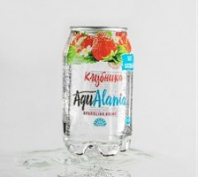
AQUALANIA-LIGHT-KLUBNIKA-330-PETCAN
AquAlania Light Клубника без сахара, 0,33 л, ПЭТ-банка с алюминиевой крышкой
Клубника
0,33 л, ПЭТ-банка с алюминиевой крышкой
https://img1.creatium.ru/80/b3/a1/c9359f69009cf574a308540314a5b998de/klubnika.jpg
artifacts/aqualania-import/2026-08-05T13-05-07-740Z-final/processed/AQUALANIA-LIGHT-KLUBNIKA-330-PETCAN.webp
224×200 image/jpeg
review=approved
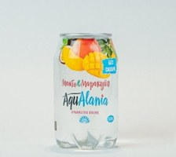
AQUALANIA-LIGHT-MANGO-MARAKUYYA-330-PETCAN
AquAlania Light Манго-Маракуйя без сахара, 0,33 л, ПЭТ-банка с алюминиевой крышкой
Манго-Маракуйя
0,33 л, ПЭТ-банка с алюминиевой крышкой
https://img1.creatium.ru/30/01/c9/9a56bfd29095304fe7221f7a309a9b01d2/mango_marakuya.jpg
artifacts/aqualania-import/2026-08-05T13-05-07-740Z-final/processed/AQUALANIA-LIGHT-MANGO-MARAKUYYA-330-PETCAN.webp
224×200 image/jpeg
review=approved
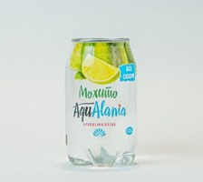
AQUALANIA-LIGHT-MOHITO-330-PETCAN
AquAlania Light Мохито без сахара, 0,33 л, ПЭТ-банка с алюминиевой крышкой
Мохито
0,33 л, ПЭТ-банка с алюминиевой крышкой
https://img1.creatium.ru/dc/05/ce/7bcaeba27863bf92568ca429daa51a94c9/mohito.jpg
artifacts/aqualania-import/2026-08-05T13-05-07-740Z-final/processed/AQUALANIA-LIGHT-MOHITO-330-PETCAN.webp
224×200 image/jpeg
review=approved

AQUALANIA-LIGHT-VISHNYA-330-PETCAN
AquAlania Light Вишня без сахара, 0,33 л, ПЭТ-банка с алюминиевой крышкой
Вишня
0,33 л, ПЭТ-банка с алюминиевой крышкой
https://img1.creatium.ru/34/98/b4/264e758252cbd06694d4599add0a450446/vishnya.jpg
artifacts/aqualania-import/2026-08-05T13-05-07-740Z-final/processed/AQUALANIA-LIGHT-VISHNYA-330-PETCAN.webp
224×200 image/jpeg
review=approved

AQUALANIA-LIGHT-YABLOKO-330-PETCAN
AquAlania Light Яблоко без сахара, 0,33 л, ПЭТ-банка с алюминиевой крышкой
Яблоко
0,33 л, ПЭТ-банка с алюминиевой крышкой
https://img1.creatium.ru/b3/fd/6c/21d838260cc52c05912efbe65057775e61/yabloko.jpg
artifacts/aqualania-import/2026-08-05T13-05-07-740Z-final/processed/AQUALANIA-LIGHT-YABLOKO-330-PETCAN.webp
224×200 image/jpeg
review=approved
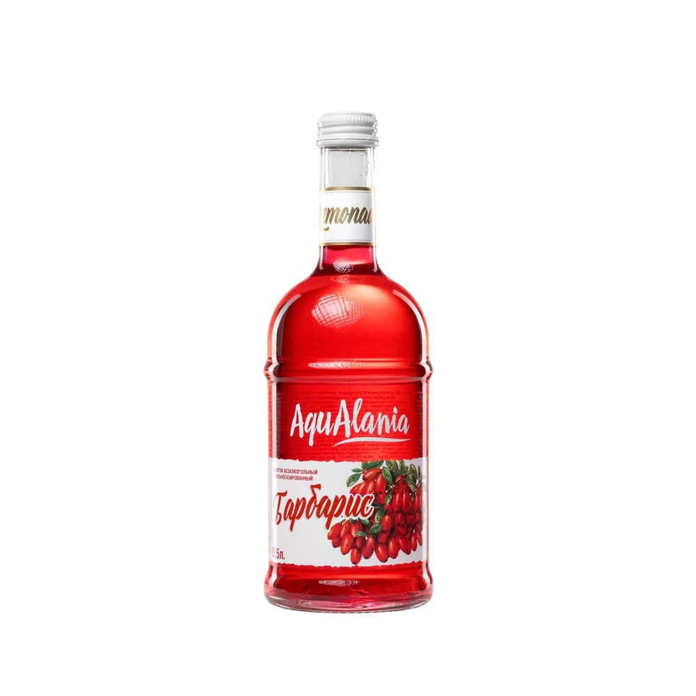
AQUALANIA-PREMIUM-BARBARIS-500-GLASS
AquAlania Барбарис, 0,5 л, стекло
Барбарис
0,5 л, стекло
https://img1.creatium.ru/disk2/77/1d/b4/bbf9433d5726c208db34ee262e026f8ea0/barb.png
artifacts/aqualania-import/2026-08-05T13-05-07-740Z-final/processed/AQUALANIA-PREMIUM-BARBARIS-500-GLASS.webp
1921×3048 image/png
review=approved

AQUALANIA-PREMIUM-DYNYA-MYATA-500-GLASS
AquAlania Дыня-Мята, 0,5 л, стекло
Дыня-Мята
0,5 л, стекло
https://img3.creatium.ru/disk2/94/78/f0/c32bc3e582075cff386d6eee30d32c8f07/dinya_myata_photoroom.png
artifacts/aqualania-import/2026-08-05T13-05-07-740Z-final/processed/AQUALANIA-PREMIUM-DYNYA-MYATA-500-GLASS.webp
1027×1691 image/png
review=approved
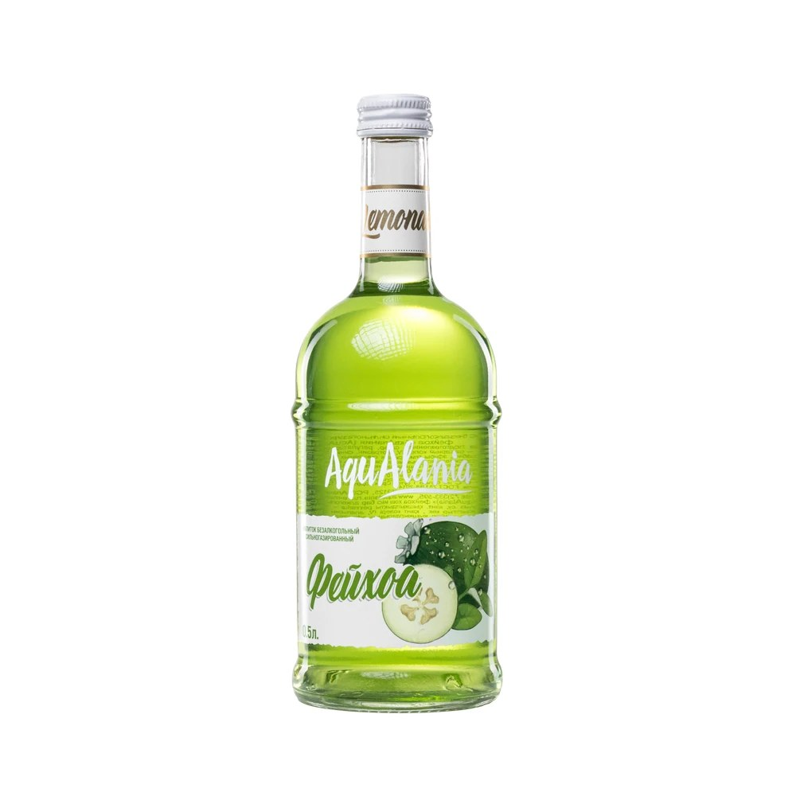
AQUALANIA-PREMIUM-FEYHOA-500-GLASS
AquAlania Фейхоа, 0,5 л, стекло
Фейхоа
0,5 л, стекло
https://img1.creatium.ru/disk2/6c/58/b4/727eadecc0341ab2b0117fc06b2395f6ea/tarhun.png
artifacts/aqualania-import/2026-08-05T13-05-07-740Z-final/processed/AQUALANIA-PREMIUM-FEYHOA-500-GLASS.webp
1810×2810 image/png
review=approved

AQUALANIA-PREMIUM-GRUSHA-500-GLASS
AquAlania Груша, 0,5 л, стекло
Груша
0,5 л, стекло
https://img1.creatium.ru/disk2/a0/e4/52/2da5ebe0acc0de871b92ba3a76554ce0cd/grusha.png
artifacts/aqualania-import/2026-08-05T13-05-07-740Z-final/processed/AQUALANIA-PREMIUM-GRUSHA-500-GLASS.webp
1808×2894 image/png
review=approved

AQUALANIA-PREMIUM-IGRISTOE-500-GLASS
Напиток газированный AquAlania Игристое, 0,5 л, стекло
Игристое
0,5 л, стекло
https://img3.creatium.ru/disk2/37/73/3e/78374b5e80474321f11c27bee48b31c522/igristoe_photoroom.png
artifacts/aqualania-import/2026-08-05T13-05-07-740Z-final/processed/AQUALANIA-PREMIUM-IGRISTOE-500-GLASS.webp
1005×1625 image/png
review=approved
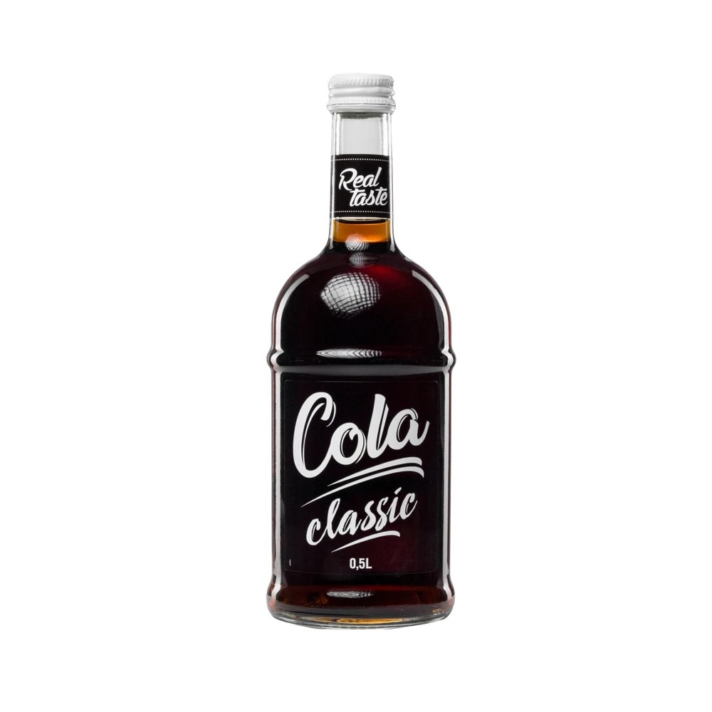
AQUALANIA-PREMIUM-KOLA-500-GLASS
AquAlania Кола, 0,5 л, стекло
Кола
0,5 л, стекло
https://img1.creatium.ru/disk2/78/ca/d6/11afe945923f229a4246564846d99fc8c8/kolka.png
artifacts/aqualania-import/2026-08-05T13-05-07-740Z-final/processed/AQUALANIA-PREMIUM-KOLA-500-GLASS.webp
1400×2111 image/png
review=approved
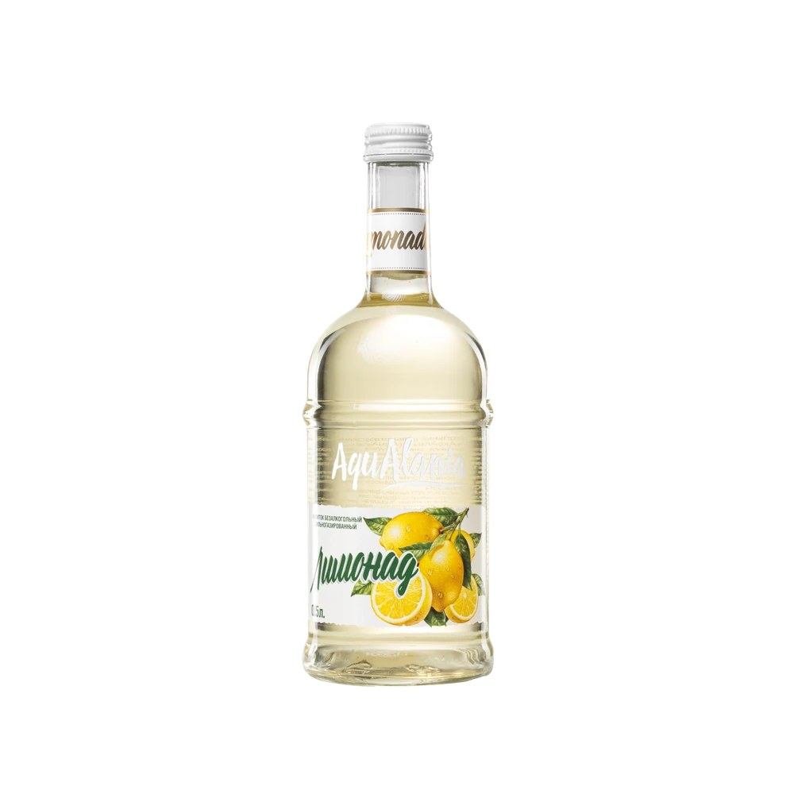
AQUALANIA-PREMIUM-LIMONAD-500-GLASS
AquAlania Лимонад, 0,5 л, стекло
Лимонад
0,5 л, стекло
https://img1.creatium.ru/disk2/5f/28/0c/b7702f3f281cb3b03f00a206972a340ee3/limonad.png
artifacts/aqualania-import/2026-08-05T13-05-07-740Z-final/processed/AQUALANIA-PREMIUM-LIMONAD-500-GLASS.webp
1810×3072 image/png
review=approved
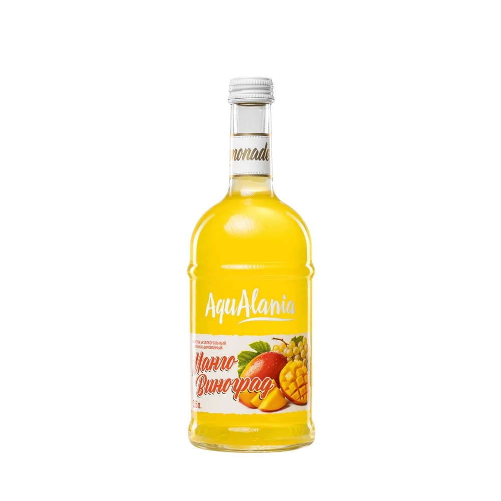
AQUALANIA-PREMIUM-MANGO-VINOGRAD-500-GLASS
AquAlania Манго-Виноград, 0,5 л, стекло
Манго-Виноград
0,5 л, стекло
https://img1.creatium.ru/disk2/7b/cd/44/14b2e2445c79871ad7b06f01cc570d0e86/mango_vinograd.png
artifacts/aqualania-import/2026-08-05T13-05-07-740Z-final/processed/AQUALANIA-PREMIUM-MANGO-VINOGRAD-500-GLASS.webp
1922×2924 image/png
review=approved
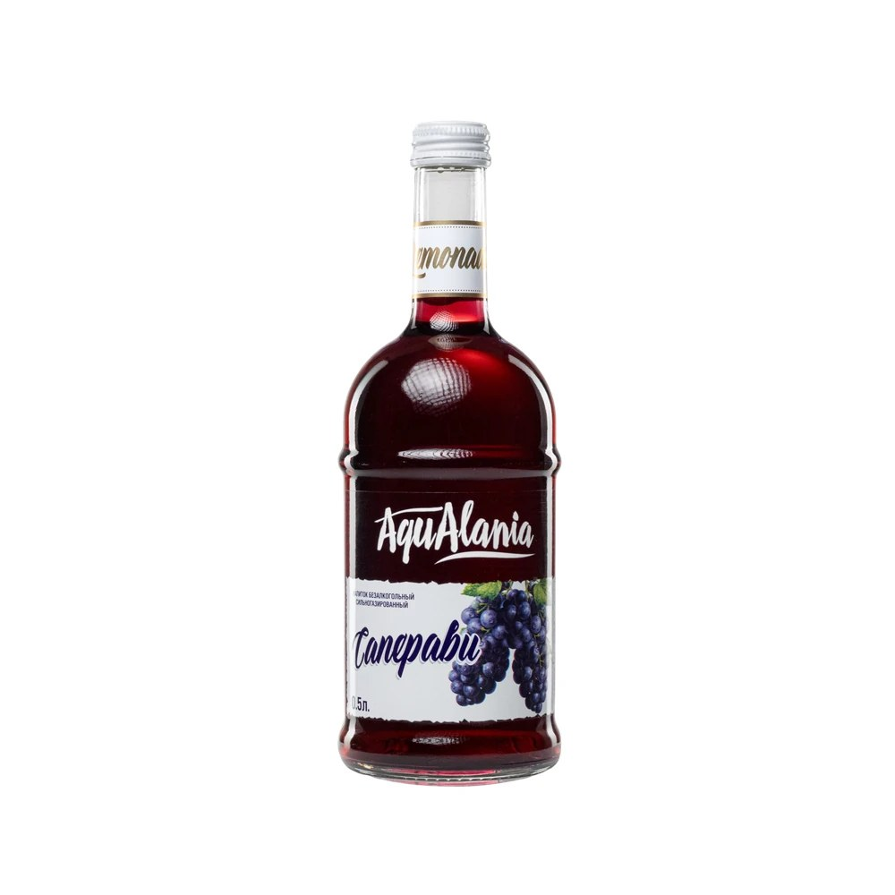
AQUALANIA-PREMIUM-SAPERAVI-500-GLASS
AquAlania Саперави, 0,5 л, стекло
Саперави
0,5 л, стекло
https://img1.creatium.ru/disk2/45/21/03/0d903e50106cdbc3516f5a800c1844e920/saperavi_2.png
artifacts/aqualania-import/2026-08-05T13-05-07-740Z-final/processed/AQUALANIA-PREMIUM-SAPERAVI-500-GLASS.webp
1852×2973 image/png
review=approved

AQUALANIA-PREMIUM-SLIVA-500-GLASS
AquAlania Слива, 0,5 л, стекло
Слива
0,5 л, стекло
https://img1.creatium.ru/disk2/47/8a/15/b1f4726c9a3372e57846105fab84cccd89/sliva_2.png
artifacts/aqualania-import/2026-08-05T13-05-07-740Z-final/processed/AQUALANIA-PREMIUM-SLIVA-500-GLASS.webp
1815×2979 image/png
review=approved

AQUALANIA-PREMIUM-TARHUN-500-GLASS
AquAlania Тархун, 0,5 л, стекло
Тархун
0,5 л, стекло
https://img1.creatium.ru/disk2/39/1b/24/b02b1f256ede98d698e3b236e00df91149/taruhn.png
artifacts/aqualania-import/2026-08-05T13-05-07-740Z-final/processed/AQUALANIA-PREMIUM-TARHUN-500-GLASS.webp
1828×3016 image/png
review=approved
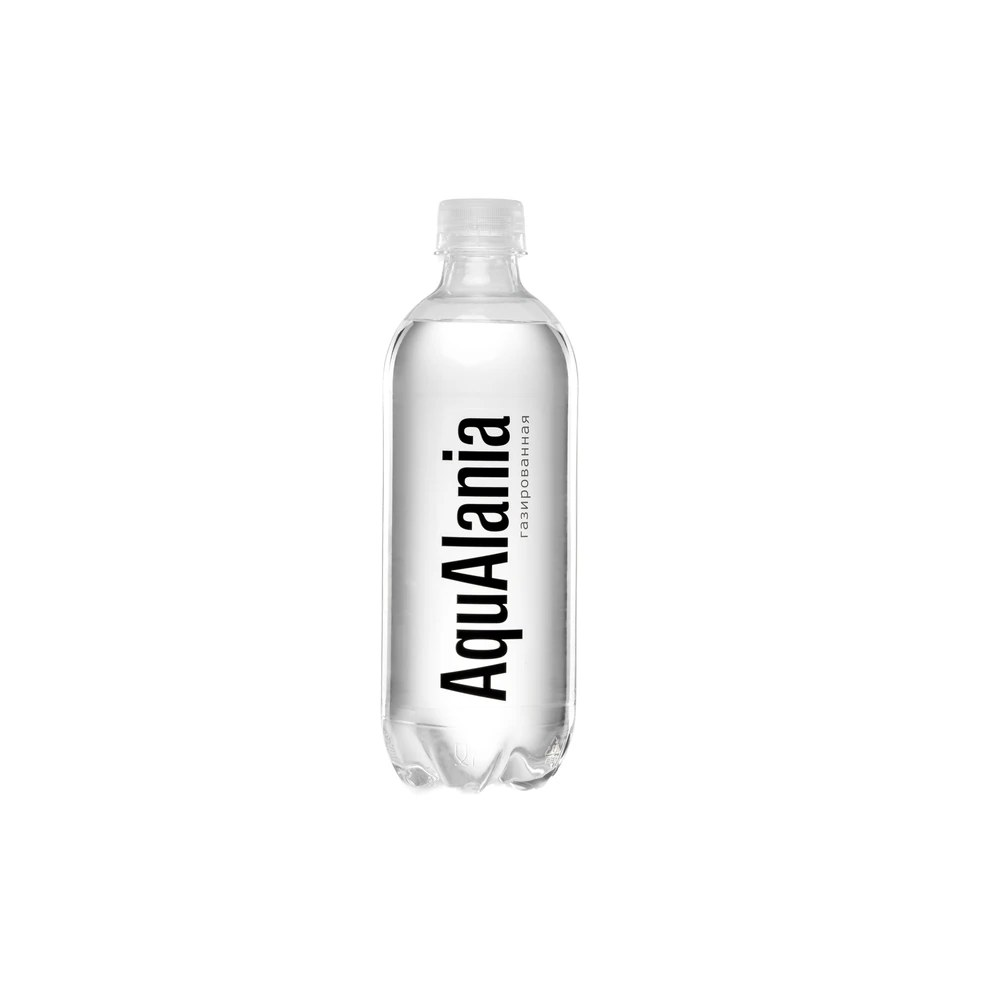
AQUALANIA-WATER-SPARKLING-500-PET
AquAlania вода минеральная газированная, 0,5 л, ПЭТ
Газированная
0,5 л, ПЭТ
https://img3.creatium.ru/disk2/dd/70/4c/47eadc634a015ad7e866389bec88e56f59/voda_pet_0_5_gaz_15.png
artifacts/aqualania-import/2026-08-05T13-05-07-740Z-final/processed/AQUALANIA-WATER-SPARKLING-500-PET.webp
3833×5729 image/png
review=approved
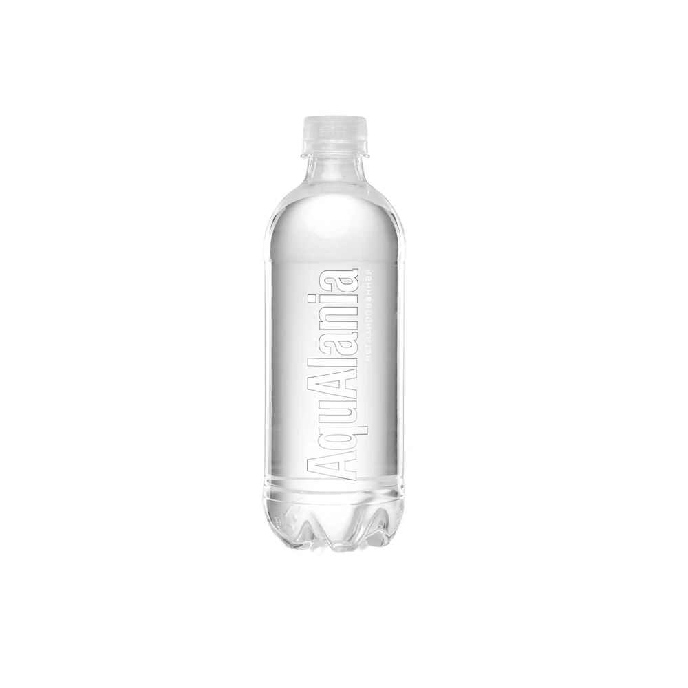
AQUALANIA-WATER-STILL-500-PET
AquAlania вода минеральная негазированная, 0,5 л, ПЭТ
Негазированная
0,5 л, ПЭТ
https://img3.creatium.ru/disk2/1a/b8/7a/2b6d66b4ec363294fe8df3588971e93795/voda_pet_0_5_ne_gaz_15.png
artifacts/aqualania-import/2026-08-05T13-05-07-740Z-final/processed/AQUALANIA-WATER-STILL-500-PET.webp
3841×5361 image/png
review=approved